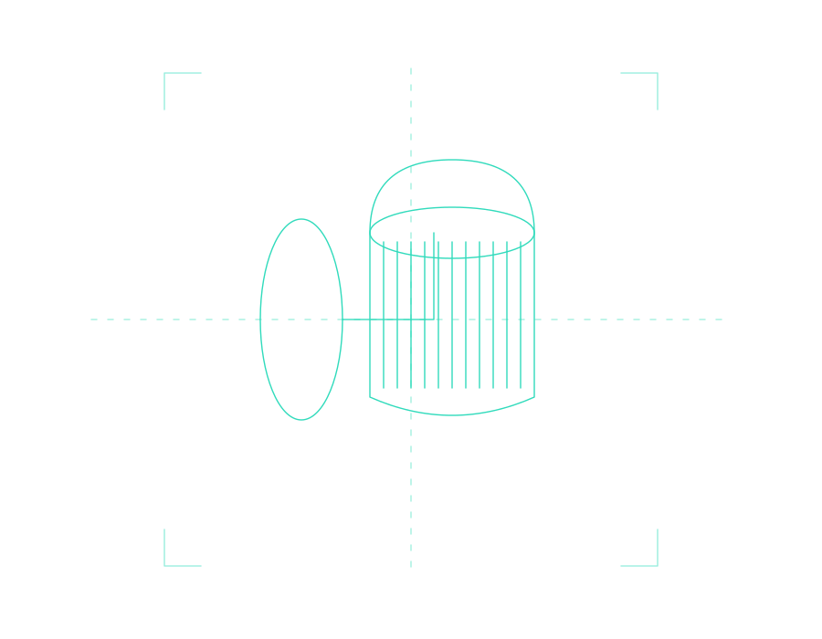
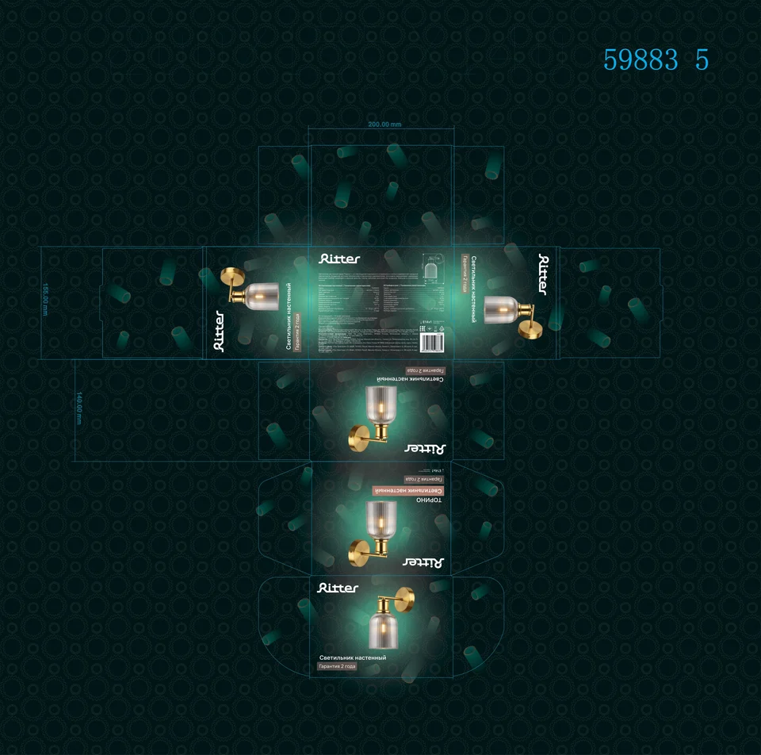

Ritter / 05
TORINO
Gold and glass in an emerald glow.


VISUAL IDEADesign,
Design,
assembled in volume.
A deep green background highlights the golden sconce details and the transparency of its ribbed shade. A soft halo draws attention to the product.
Ornament and repeated product motifs create the setting, while a white logo and labels maintain contrast. The dieline shows how the imagery adapts to different faces.
- Design author
- Polina Nikulina
- Discipline
- Packaging · graphics · layout
- Brand
- Ritter
The 3D mockup was generated from the dieline for this portfolio. The original artwork is shown below.
VOLUME / VIEWS / VARIATIONS
CONSTRUCTION / DIELINES
From flat artwork
to an object.
